世界の葉巻ニュース 特集
特集 — ニコラス・メリーロ
前回（第10弾）の結びで予告した、「もう一人の卒業生」の物語です。スティーブ・サカ が ドリュー・エステート の「表の顔」――社長から CEO へ上り詰めた経営者――だったのに対し、今回の主人公 ニコラス・メリーロ は「巻き場の人」でした。葉の買い付けと発酵の監督から身を起こし、巨大工場の生産実務を握り、看板 リガ・プリバーダ No.9 を「巻ける形」に落とし込んだ実装の人です。
2014年に古巣を去った彼は、買収の際に買い取らせた小口持分の資金で ファウンデーション・シガー・カンパニー を全額自己資金で興します。歩んだ道は、サカとは対照的でした。サカが最大の評価誌 Cigar Aficionado と「採点しない」約束を交わしたのに対し、メリーロの葉巻はその評価誌の年間 Top 25 の常連となります。本社は、故郷コネチカット州のタバコ畑の真ん中。エステリに11年あまり住み込んだ男は、今もコネチカットとニカラグア、二つの故郷を行き来します。

そして彼のラインの名前は、すべて歴史の物語です。ニカラグアの民俗舞踊劇、契約の箱、エチオピア皇帝、最古の文明、英国の城。歴史オタクの蔵書がそのまま商品棚になったような会社ですが、その命名はやがて本人の実人生と重なります。2022年、彼は皇帝メネリク2世が創設したエチオピア星勲章のナイト・コマンダーに叙されました。歴史の名を葉巻に背負わせ続けた男が、歴史そのものに名を連ねたのです。一方で日本では、彼の葉巻は財務省の認可リストに一行も載っていません。本特集では、祖父のブロードリーフに始まり、日本で受け取った一通のメールを経て、二つの故郷と一つの勲章に至る道を辿ります。
本特集の事実関係は、専門誌・業界誌（Cigar Aficionado、Halfwheel、Cigar Coop、Cigar Dojo、Cigar Snob）、ブランド公式サイト（Foundation Cigar Company）、本人の動画・ポッドキャストでの発言と SNS での開示で裏取りした範囲に基づきます。本人の語りに数字の揺れがある箇所（在籍年数、農場の面積、限定品の箱数など）は、検証欄にその旨を明記し、本文では単一の数字で断定しない書き方をしました。裏の取れない生年などは採用していません。日本国内の状況は、当編集部が財務省の認可リストと国内販売店の掲載を照合した日本葉巻データベース（2026年11月17日時点）に基づきます。米国価格は当時の公表価格で、円換算は $1＝¥160 で計算しました。
◆ 一、祖父のブロードリーフ ― ニューヘイブンの少年
ニコラス・メリーロ は、コネチカット州ニューヘイブンに生まれ、隣町ハムデンで育ちました。彼の葉巻の原点は、二人の祖父です。父方の祖父 パスクワーレ は、第二次大戦で第75師団の一員としてバルジの戦いを戦い、戦後はニューヘイブンのウィンチェスター（銃器）工場で働いた人でした。慎ましい給料の中から彼が手放さなかったのが、州通り（ステート・ストリート）の F.D.グレイヴス 製のコネチカット・ブロードリーフの葉巻だったといいます。母方の祖父は、ニューヘイブンで知られたイタリア食品スーパー「ペニャターロ」の家系の人で、こちらはシェード葉巻とパイプを愛した人でした。
最初の葉巻は、祖父と兄と一緒に吸った一本でした。彼は Cigar Aficionado の Q&A で、幼い頃から「コネチカット・ブロードリーフの香りに囲まれて育った」と語り、「葉巻を吸う儀式（セレモニー）に恋をした」と振り返っています。高校の卒業式では級友と祝いの葉巻を吸って副校長に激しく叱られたものの、駆けつけた父が副校長に食ってかかり、葉巻は守る価値のある宝だという思いを強くした、という場面も残っています。その父は卒業祝いに、ダイアモンド・クラウンのヒュミドールを贈りました。
作り手を志す転機も、高校卒業の夏に訪れます。Cigar Aficionado の1995/96年冬号に載った記事「シガー・キングス」（ロランド・レイエス・シニアとプーロス・インディオスの物語）を読んで、葉巻を作る側の人生に憧れたのです。卒業式で彼が吸ったのは、そのプーロス・インディオスの No.2 トルペードでした。故郷の葉の香りと、雑誌の中の作り手たち。少年の進路は、この二つでほぼ決まっていました。
◆ 二、ヒュミドールの番人 ― カラバッシュ・ショップの18歳
1996年8月の最終週、18歳になったばかりのメリーロは、地元ハムデンの葉巻店 カラバッシュ・ショップ でヒュミドールの責任者に就きます。同じ週に、彼はクイニピアック大学（国際ビジネス専攻）へ入学しました。葉巻ブーム最盛期の小売現場と、大学の講義。二つの学び舎を行き来する生活の始まりです。
カラバッシュ・ショップは、メアリー・ルッソ と キャロル・ヴェラルディ の二人の女性が切り盛りする、コネチカット最大級のパイプ在庫を持つ店でした。就任直後、見本市から戻った二人に「とても大きなサンプルの袋を二つ」渡され、ヒュミドールに入れる銘柄の決定を任されます。18歳の若者は、自分なりのレーティング制度を作って新着の葉巻を全て試し、仕入れを判断していきました。やがて彼は、この店で ドリュー・エステート の初期ブランド、ラ・ビエハ・ハバナの仕入れを決めます。それが、創業者 ジョナサン・ドリュー との縁の実務的な始まりでした。1997〜98年頃、店の土曜イベントの後に二人は出会い、以後はメールと電話で連絡を取り合う関係が続きます。
2000年5月に大学を卒業すると、彼はローマへ渡ります。バチカンで、2000年のジュビリー（聖年）に訪れる巡礼者への対応の仕事に就いたのです。このローマ滞在は、後にもう一度、彼の人生に戻ってきます。トレヴィの泉の近くのパイプ店で出会った職人との縁が、15年後の会社の名前になるからです（裏話参照）。
ローマでメリーロが入り浸ったパイプ店の店主は、パイプ職人の マッシモ・ムジコ でした。カラバッシュ・ショップで彼の作るパイプを売っていた縁もあり、二人は親友になります。ムジコは後に、パイプ職人たちの協同ブランド「Foundation by Massimo Musico」を立ち上げました。2015年、自分の葉巻会社を興すにあたり、メリーロは彼に電話をかけます。「ファウンデーションの名を使わせてほしい」。返ってきた答えは、「君は葉巻の作り手、私はパイプの作り手。その名を使ってくれるのは光栄だ」というものでした。会社の名前は、故郷でもニカラグアでもなく、ローマの小さなパイプ店から譲り受けたものなのです。ちなみにこの最初の出会いの日、メリーロが着ていたのはエチオピア皇帝の絵柄のシャツで、ムジコは彼に「ラスタマン、イタリアで何をしている？」と声をかけたといいます。エチオピアへの傾倒は、この頃すでに始まっていました。
◆ 三、日本で受け取った一通のメール ― 世界一周の果てに
ローマから戻った後、メリーロは約1年をかけて世界を一周するバックパックの旅に出ます。約1,500ドル（約¥240,000）の世界一周航空券で、パリ、インド、バンコク、タイ、メコン川、ラオス、ベトナム、中国、北京を巡る旅でした。全行程、葉巻を吸い続けた旅でもあります。ジョナサン・ドリューは、その旅のメールの宛先リストに入っていました。
旅の終盤、彼が日本に着いた時、そのジョナサンから一通のメールが届きます。本文は一文だけでした。「電話をくれ。明らかに真剣な話がある」。メリーロ本人が Cigar Aficionado の Q&A（2018年）で明かした文面です。電話をすると、ジョナサンは明言しました。「右腕になって、エステリに住んでほしい」。数年越しの小売店同士の付き合いは、この一通で人生の転機に変わります。彼は後に、動画インタビューでもこの場面を再演して語っています。「日本にいた時、一文だけのメールが来たんだ。今も残っていると思う」。
2003年3月、24歳のメリーロはニカラグアのエステリに降り立ちます。見学のつもりで行ったら、その場で始めることになった――彼の入門譚は、そういう前のめりな形で幕を開けました。
◆ 四、巻き場の人 ― No.9を「巻ける形」にした男
着任した当時のドリュー・エステートは、ニック・ペルドモの家の裏で操業するほどの規模でした。ジョナサンは1週間で去り、「自分で何とかしろ（figure it out）」と置いていったといいます。生産経験のない24歳は、まず巻き方（バンチとロール）から学び、生産工程の仕組みそのものを作っていきました。住まいはタバコ農場の中の家でした。「ここに住むなら農場に住むと決めた」。その家は現在、AJフェルナンデス のラ・ソレダ農場（サン・ロターノ農場の隣）になっています。
入社当初の仕事は、葉の買い付けと発酵の監督でした。ブレンドの実験は2003〜05年に始まり、師の一人はタンパのオリバ・タバコの グスタボ・クラ。TABSA では アルセニオ・ラモス と働いて「正しい場所に来た」と確信したといいます。やがて Director of Tobaccos & Production（葉・生産ディレクター）として、2007年に開設された巨大工場ラ・グラン・ファブリカの運営実務を握り、退社時の肩書きは国際部門 VP でした。着任時とは比べものにならない規模――本人の語りでは、離任の頃には1日105,000本の生産を監督する、ニカラグア最大級の手巻き工場になっていました。
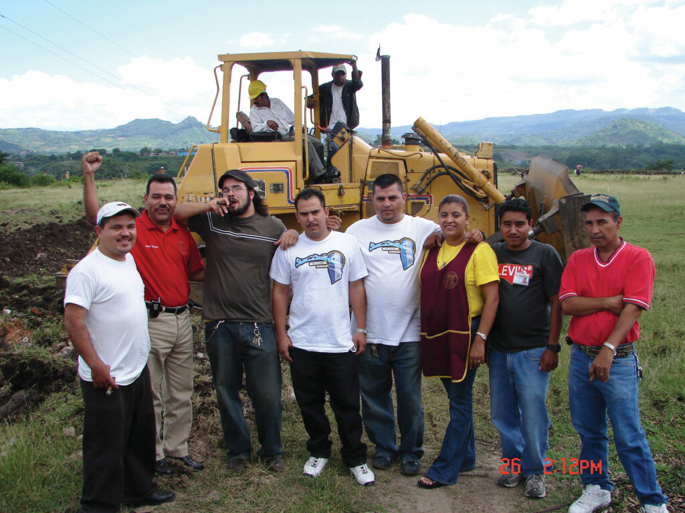
看板 リガ・プリバーダ No.9 の開発は、サカ、ジョナサン、そしてメリーロの3人で50種を超えるブレンドを試した末の到達点でした。ただし「9番目を選んだ」という単純な話ではありません。サカ本人の発売前の発言によれば、有望だった基礎ブレンドは #3、#4、#9 の三つで、そこからさらに30種を超える派生が作られ、最終的に #9 系の変種が残った。バンドに手書きするには名前が長すぎる――だから名前だけを「No.9」に切り詰めたのだといいます。注文主はサカでした。「社長である自分が本当に吸いたいと思え、同業者に自信を持って手渡せる葉巻を、工場に作らせたかった」。2005年夏に始まったこの探索で、役割分担ははっきりしています。企画と味の基準点はサカ。葉の調達と工場側の実装はメリーロ。ただし彼は単なる調達担当ではなく、当時の職責を「全ての葉の購買、全ての発酵の監視、ブレンディング、生産計画、出荷、そして全ての品質管理」と自ら要約する、共同ブレンダーの一人でした。「試作を、巻ける形にする男」が彼だったのです。Halfwheel はドリュー時代の彼について、「葉巻の味を決める点で、最も重要な人物の一人、あるいは最も重要な人物だった」と評しています。
その配合の核が、コネチカット・ブロードリーフでした。上級のエクアドル産コネチカット葉なら5ポンド余りでトロを1,000本巻けるところ、ブロードリーフでは33ポンド以上を要することがある、とサカは説明します。葉は納屋から直接買い付けられ、冷蔵コンテナでニカラグアへ送られ、工場で長期の発酵を経て初めて使われた。No.9 が常に品薄だった背景には、この歩留まりの悪さがあります。
渾名も仕事ぶりそのままでした。「ニック・ラグア（Nick R. Agua）」はニカラグアとの言葉遊び。そして「ブロードリーフの長（Chief of the Broadleaf）」。本人によれば、この呼び名は往年のブランド「ブラックホーク」の箱にあった文句に由来するといいます。「ブロードリーフは私にとってタバコ以上のもの。神聖なものだ」――彼の言葉です。
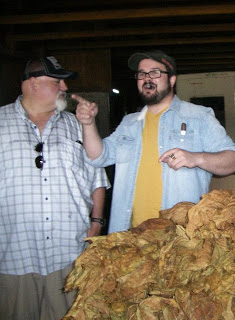

一部の海外小売サイトには、「メリーロは1990年代後半にジョナサン・ドリューとドリュー・エステートを共同設立した」という趣旨の記述が見られます。これは誤りです。彼は1997〜98年頃に小売店の現場でジョナサンと出会い、2003年に入社した従業員であり、後に小口の株主（パートナー）になった人物です。「共同創業者」の肩書きで彼を語る資料は、本人の発言とも業界誌の記録とも一致しません。本特集では、彼を「葉と生産を担った実務の中核」として描きますが、創業者としては扱いません。
◆ 五、持分を資金に ― 退社と、全額自己資金の創業
2014年、メリーロはドリュー・エステートを去ります。理由を彼ははっきり語っています。米 FDA の規制により、「新ブランドを立ち上げられる期限」が迫ることへの恐怖です。「自分のブランドを永遠に作れなくなるかもしれないと思った」。待遇も給与も良かっただけに、「人生で最も難しい決断の一つだった」とも語っています。退社の前後には、まずコンサルティング会社メリーロ・インターナショナルを立ち上げ、物理的にニカラグアを離れたのは2015年でした。
創業資金の出どころが、この卒業生らしい設計でした。退社時点で彼はまだ小口のパートナー（株主）として会社に残っていました。2014年、スウィッシャー がドリュー・エステートを買収した際、その持分を買い取らせます。Cigar Aficionado の Q&A で、彼はこう答えています。「Q：スウィッシャーが小切手を切ったのか。A：その通り。その金をファウンデーションの創業に使った」。投資家を入れる案もあったものの、「始める前に会社の30%を失いたくなかった」ため、全額自己資金にしました。古巣の買収が、独立の軍資金になったのです。
2015年6月、ファウンデーション・シガー・カンパニー がコネチカットで産声を上げます。本社はサウスベリーの自宅。同年7月の見本市 IPCPR（ニューオーリンズ）でデビューし、9月、第一作 エル・グエグエンセ が TABSA（AGANORSA）の工場から出荷されました。サカのダンバートン創業も同じ2015年です。Cigar Coop はこの年を振り返って、「ドリュー・エステートの卒業生たち：サカとメリーロ」と総括しました。同じ工場を出た二人が、同じ年に、それぞれの王国を興したのです。
◆ 六、故郷その一 ― コネチカット・リバー・バレーの畑の上の本社
メリーロの物語の土台は、コネチカット・リバー・バレーの土そのものです。氷河が後退した後に残った古代の湖（ヒッチコック湖）の湖底が、砂質ロームの土を残しました。「ウィンザー土壌」と呼ばれるこの土壌シリーズは、コネチカット州内に約34,000エーカー分布するとされます。彼は動画インタビューで繰り返し講義しています。「コネチカットとは、モヒガン語で『長い潮汐の川』という意味だ。この谷の土壌ゆえに、コネチカット・ブロードリーフは他所では再現できない」。ウィンザーは1640年に葉巻用タバコの栽培が始まったとされるバレーの中心地で、陽光の下で育てる太く濃い在来葉ブロードリーフが、この土地の主役でした。1900年には、スマトラ葉に対抗するため、テントで光を切って育てる「シェード」栽培がウィンザーで生まれ、世界へ広がっていきます。
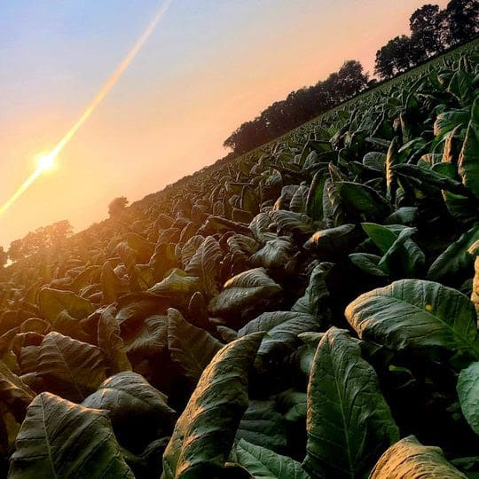
しかし、この産地は消えゆく途上にあります。数字は、範囲と種類を分けて読む必要があります。コネチカット州のタバコ作付は1925年に約3万エーカーで最盛期を迎えましたが、これは全種類の合計です。州農業試験場の年報が残す1930年代のバレー平均は総計約22,500エーカーで、内訳はブロードリーフ約8,700、ハバナシード約7,700、シェード約6,200でした。現在の作付の大半は露地のブロードリーフです。その規模を示す数字には時点と範囲の留保が要ります。州農業試験場の研究者は2020年時点で、ブロードリーフの作付を約3,000エーカーと見積もっていました。ただしこれは2020年時点の推計であり、現在の確定値ではありません。公式統計では、USDAの2022年農業センサスがコネチカット州のタバコ収穫面積を3,056エーカー（44農場）と記録していますが、これは州全体・全種類の合計で、種類別の内訳は公表されていません。シェードに至っては2025年時点で約35エーカー、マサチューセッツ州サウスウィックのドワイト・アーノルド農場ただ1戸まで減り、コネチカット州内ではもう栽培されていません。メリーロが「畑の上に本社を置く」ことに若い頃から拘り続けたのは、この消えゆく産地の内側に身を置く、という意思表示でもありました。
コネチカット州のタバコ栽培面積を正確に把握することは、必ずしも容易ではない。公表資料には、州全体のタバコ作付面積、品種別の栽培面積、特定地域の推計値などが混在しており、調査年や集計対象も異なる。例えば、USDAの2022年農業センサスでは州全体のタバコ作付面積が3,056エーカーと記録されている。一方、地域の専門家や業界関係者による推計では、ブロードリーフやシェードなど、特定品種に限定した数字が紹介されている。これらは必ずしも同じ条件で集計された数字ではない。そのため、本記事では異なる資料の数値を単純に合算・比較せず、それぞれの調査年、対象範囲、出典を明示する。現時点で確認できる資料には限界があり、特定時点における品種別の正確な総作付面積を確定することは難しい。数字の違いも、そうした統計上の条件を踏まえて読む必要がある。
縮小の背景には、葉巻の製造技術そのものの変化がありました。バレーのタバコ博物館を運営する歴史協会は、衰退の起点に1953年を挙げます。粉砕したタバコを接着剤で紙のように薄いシートに成形する「均質化タバコ葉」が実用化され、まずバインダー（中巻き葉）を置き換えたため、バインダーの主役だったブロードリーフの作付が急速に落ちたというのです。技術の基礎特許は1952年に成立しました。均質化シートのラッパーとしての扱いは二段階で進んでいます。まず1950年代末に、連邦のタバコ規制当局が、提出された複数の均質化タバコ材料について「当時の天然ラッパー葉の本質的な性質の大部分を備えている」と行政上認めました。続いて1965年、連邦議会が法律（Public Law 89-44）を改正し、再構成タバコを葉巻のラッパーとして法文上も明認します。さらに1973年には、ATF Procedure 73-5 が、再構成タバコ材料がラッパーに適するかを判定する分析試験の手順として整備されました。機械巻き葉巻の大量生産を可能にしたこの素材が、バレーの天然葉への需要を構造的に削り始めたこと自体は、特許・企業史・規制史のいずれからも裏付けられます。畑の風景を変えたのは、嗜好の変化だけではなかったのです。
本社の変遷は、その拘りの記録です。2015年の創業時はサウスベリーの自宅。2017年3月、ウィンザーのタバコ畑の中の建物へ移ります。Cigar Aficionado が「畑の中の本社」として記事にしたその場所は、コネチカット最古級のシェード農家の一つ、スラル家の農場に立つ古い家族住宅でした。やがて土地が物流施設の用地として売られ、退去を余儀なくされます。そして2023年6月、彼はエリントンへ移りました。栽培と仲買を担う ダン＆フォスター の所有する300エーカーの農場の中、住所はアボット・ロード78番地。建物は、シェード栽培者の古い宿舎バラックをオフィスに転用したものです。メリーロはこの建物が、第二次大戦中に畑の働き手として来たジャマイカ人労働者たちの宿舎だったと語ります。
その背景にある地域史自体は、確かな史実です。戦時下で深刻な人手不足に陥ったバレーでは、米連邦政府とジャマイカ（英領）政府の協定（1943年4月2日成立）によりジャマイカ人男性が到着し、ウィンザーやグランビーをはじめとするバレーのシェードタバコ農場で働き、農場のキャンプに暮らしました。戦後も戻り続け、一部はハートフォードに定住して、コネチカットの西インド人コミュニティの礎を築きます。ただし、この建物自体がその宿舎だったことを裏付ける地域史料は、現時点では確認できていません。エリントンは史料に残る労働者の配置地には挙がらず、歴史的にもブロードリーフの町でした。建物の由来は、本人の語る話として受け取るのが正確です。

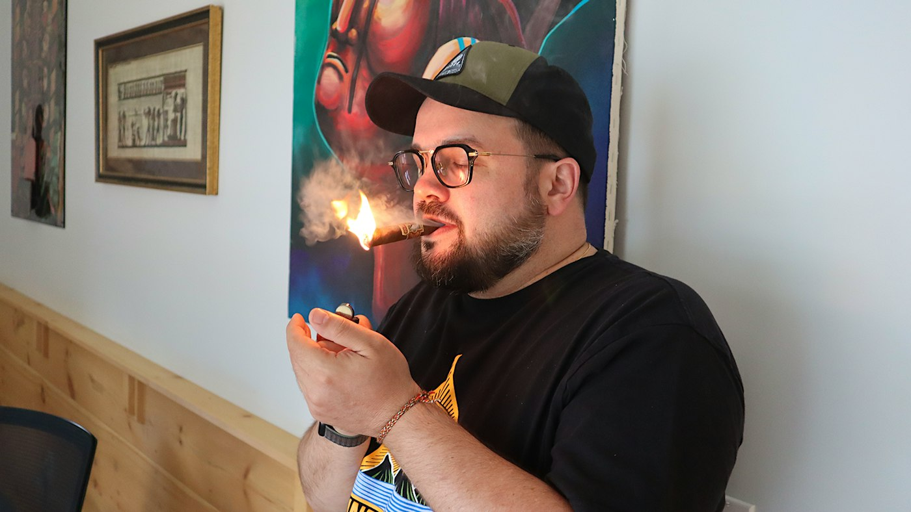
彼はこの選択を、数字ではなく言葉で説明します。「ここは葉巻タバコのナパ・バレーだ」。「税制でも利便性でも、フロリダの方が100%合理的だった。でも、故郷の州にチームを置くことが大事だった」。地主はダン＆フォスターで、農場は自社のものではありません。本人も「私は農家ではない。私の専門は収穫後――乾燥小屋、発酵、選別、ブレンドだ」と線を引きます。それでも本社を畑に置く意味は、葉の流れの中にあります。コネチカットでは栽培・収穫し、納屋でキュアリングする。キュアリングを終えた葉は、まず現地の密閉室に入れられます。熱と湿気を送り込み、最高約110度（華氏、約43°C）で1〜2か月置く「ボックス・スウェッティング」で色を定着させ、均一に整えるのです（1回に最大10,000ポンド＝約4.5トン。メリーロは「これは発酵ではない」と明言します）。その葉を約25ポンドの束にして冷蔵コンテナでニカラグアへ送り、選別と発酵、ブレンドはニカラグア側で行う。故郷の畑と、第二の故郷の工場。その往復の真ん中に、彼の会社は立っています。
一般の資料や歴史資料では、sweating（汗蒸し）は発酵と同義に使われることが少なくありません。コネチカットでも伝統的に、荷造り業者が葉を木箱に詰めて倉庫で汗蒸しし、その後に出荷していました。しかしメリーロは、ファウンデーションのボックス・スウェッティングを発酵と明確に区別し、キュアリング後の色の定着と均一化のための工程だと定義しています（Cigar Aficionado、2023年）。本稿では本人の定義に従います。なお、作付面積の数字は出典により範囲（州かバレー全体か）と種類（合計か種類別か）が異なります。本文では州農業試験場の統計など、範囲の分かる数字を優先しました。
地主の ジョン・フォスター との縁も、古いものです。二人が出会ったのは2003年、ニカラグアのタバコ倉庫の中でした。「どこの出身？」「コネチカット」「俺もコネチカット」。外国で出会った同郷の二人、それが20年の付き合いの始まりでした。メリーロは今、AJフェルナンデス向けにダン＆フォスターのブロードリーフ購入を仲介し、AJ が葉を買い、メリーロは完成品を買い取る、という形を取っています。自分は葉を買わず、葉巻を買う。なお、ダン＆フォスターはファウンデーション専属の農場ではありません。ドリュー・エステートの恒例行事「コネチカット・バーン・スモーカー」の会場農場でもあり、リガ・プリバーダのラッパー葉を育てる供給者でもあります。それでも彼は、作り手であると同時に、いまだに故郷の葉の流通の内側にいるのです。
◆ 七、故郷その二 ― エステリに住み込んだ男の「結婚」
もう一つの故郷は、ニカラグアのエステリです。2003年3月に降り立ってから、彼は2015年まで時間の大半をそこで暮らしました。首都から北へ2時間の農業の町。都会の人間には長くいると厳しい場所で、彼はタバコ農場に住み、工場の仕組みを作り、葉の人々に囲まれて生きました。「ニカラグアの人々が私を家族のように迎え入れてくれた。彼らがいなければ、今もここにいなかっただろう」と、彼はポッドキャストで語っています。
二つの土地の関係を、彼自身の言葉が何より雄弁に語ります。2021年の Cigar Coop の長尺インタビューで、彼は言いました。「コネチカットとニカラグアの結びつきは、ファウンデーションにとって強いものだ」。2023年の Cigar Aficionado の対談では、こう言い切っています。「幸せな結婚は多くない。ニカラグアとコネチカットは、最良の組み合わせの一つだ」。そして2019年の対談では、「『コネチカット出身だ』と名乗ることは、葉巻の世界では重みがある。故郷と、そこに本社を置くことを誇りに思う」とも。故郷を出た男が、故郷の名を背負って異国の工場に立ち、最後は故郷の畑に戻って会社を置く。この往復運動こそが、ファウンデーションという会社の設計図です。
創業後も、彼の生活は二拠点のままです。栽培の季節にはバレーの畑で作柄を確認し、年末から年始にかけて葉をニカラグアへ送る。デビュー作 エル・グエグエンセ が100%ニカラグア産のプーロだったことにも、本人の美学が表れています。「あの一本では、ニカラグアに真っ直ぐ向き合う必要があった。それは私の芸術的な判断で、ビジネスの判断ではなかった」。故郷の葉を極める男の、もう一つの故郷への礼儀でした。
◆ 八、歴史を巻く ― 名前に物語を背負うラインたち
ファウンデーションの棚は、一人の歴史オタクの蔵書目録のようです。デビュー作 エル・グエグエンセ は、スペイン植民地支配を風刺したニカラグアの民俗舞踊劇（ユネスコの無形遺産に選ばれた国民的演目）から取られました。主人公の老賢者の名が、そのまま英訳名「ザ・ワイズマン（賢者）」になります。2017年、マデューロ版を出すにあたり、彼は原作（コロホ）との「陰陽」の対を作るため、あえて英訳の ザ・ワイズマン・マデューロ と名付けました。やがて英名のワイズマンが正式な表名となり、原作グエグエンセは2024年に役目を終えます。「翻訳名が原名を呑んだ」命名史です。

本命の ザ・タバーナクル（2016年）は、契約の箱を収めた「幕屋」の名を持ち、箱絵にはソロモンとシバの女王の子孫とされるエチオピア皇帝ハイレ・セラシエを描きます。ラッパーは、2年前から選んで AJ に発酵させたコネチカット・ブロードリーフ。チャーター・オーク（2016年）は、祖父へのオマージュとして作られた毎日の一本で、名は故郷最大の象徴の木から。ジャマイカをテーマにしたインフューズドの ジ・アップセッターズ（2016年）は、リー・"スクラッチ"・ペリーのハウスバンドの名とレゲエの語彙をサイズ名にまといます。『ダウントン・アビー』の舞台ハイクレア城との提携（2017年）では、城の古文書に残る購買記録を手がかりに、英国紳士の食後の一本を再構成しました。発端は起業家 アダム・フォン・グートキン のコールドメールで、城の図書室で伯爵が漏らした「チャーチルはよく葉巻とカクテルを楽しみに来ていた」という一言が火種になり、メリーロの条件は「自分がブレンドしないならやらない」。最終ブレンドは、エステリで全員が試して投票し、全員一致で決めたといいます。

この命名の系譜には、本人の内面の来歴もあります。高校卒業の夏、「人生についての問い」を抱えた彼は、諸宗教と宗教的神秘家たちの学びに入りました。古代メソポタミア、エジプト、契約の箱の伝承。タバーナクル、アクスム（契約の箱の最終安置地と伝わる王国）、セネトジェル（ツタンカーメンの墓の発見100周年）という名前群は、「歴史好き」の一言ではなく、18歳の夏に始まった私的な傾倒が、そのまま商品名になったものなのです。
チャーター・オーク の名の由来となった木には、コネチカットの独立の伝説があります。1662年、チャールズ2世は植民地に自治を認める勅許状（チャーター）を与えました。ところが1687年、ジェームズ2世の派遣した総督アンドロスが、勅許状の提出を要求します。ハートフォードの会議場で議論が長引いた夜、蝋燭が灯された瞬間に部屋が暗転し、再び明るくなった時、勅許状は消えていました。ジョセフ・ワズワース大尉がそれを持ち出し、巨大なホワイトオークの空洞に隠した――これが「チャーター・オーク」です。木は1856年の嵐で倒れ、ホワイトオークは1947年にコネチカットの州木に指定されました。同時代の記録が乏しく、州の歴史サイト自体が「証明はできない」と留保する伝説ですが、メリーロは本人の発表文で「故郷コネチカット最大の象徴の名を選びたかった」と明かしています。祖父が吸った毎日の葉巻に、故郷最大の象徴の名を背負わせる。それがこのバリュー・ラインの設計でした。
| ライン（デビュー） | 製造 | ラッパー | 備考・評価 |
|---|---|---|---|
| エル・グエグエンセ（2015） | TABSA／AGANORSA | ニカラグア・コロホ'99 | デビュー作。ニカラグアの民俗舞踊劇が名の由来 CA Top 25 of 2016 第25位・92点。2024年に廃番 |
ザ・タバーナクル（2016） | AJフェルナンデス | コネチカット・ブロードリーフ | 本命のライン。箱絵はハイレ・セラシエ 2年前から選んで発酵させた葉を使用 |
チャーター・オーク（2016） | AJフェルナンデス | CTシェード／ブロードリーフ（後にハバノ版） | 祖父へのオマージュのバリュー・ライン CTシェード・ロスチャイルドが CA 93点（2018年） |
| ジ・アップセッターズ（2016） 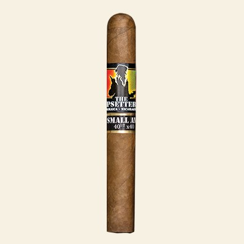 | ―（公表資料で未特定） | ジャマイカの在来葉「カウタン（Cow Tongue）」とニカラグア葉 | ジャマイカをテーマにしたインフューズド サイズ名はレゲエ／スカの語彙。カウタンは「先住民アラワクが何世紀も前にタバコを植えた同じ丘で栽培される」と同社が説明する在来葉（独立した農学的裏付けは未確認） |
| ザ・ワイズマン・マデューロ（初代）（2017） 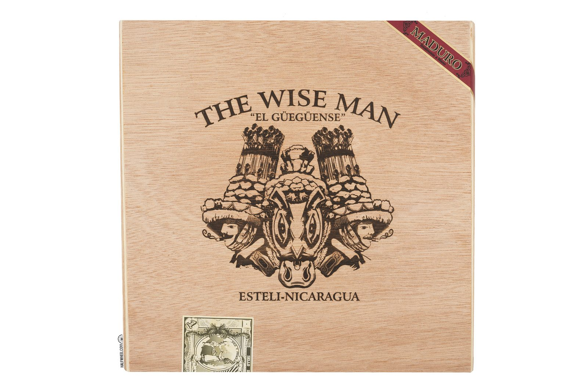 | TABSA | メキシコ・サンアンドレス | CA Top 25 of 2018 第3位・95点（ロブスト） 会社の名を決定的にした一本。2024年に廃番 |
メネリク（2017イベント限定→2019限定生産） | TABSA／AGANORSA | メキシコ・サンアンドレス | 「賢者の子」エチオピア皇帝の名 イベント会場でも買えない配り方で登場し、四半期ごとに1,000箱の限定生産に。1本 $13（約¥2,100） |
ハイクレア・キャッスル エドワーディアン（2017） | AJフェルナンデス | CTシェード | 『ダウントン・アビー』の城との提携の第一作 メリーロがブレンド、Foundation が米国流通を担当 |
| タバーナクル・ハバナシード CT No.142（2018） 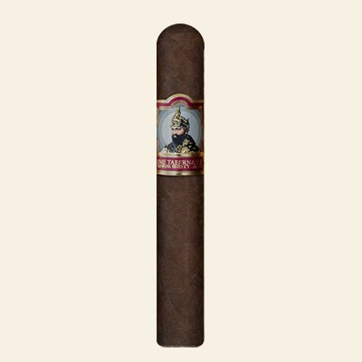 | AJフェルナンデス | コネチカット栽培のハバノ種ハイブリッド | Cigar Dojo の Cigar of the Year 2018 |
ハイクレア・キャッスル ヴィクトリアン（2019） | AJフェルナンデス | エクアドル・ハバノ | CA Top 25 of 2020 第21位・93点（トロ） |
| タバーナクル デイヴィッド＆ゴライアス（2020） 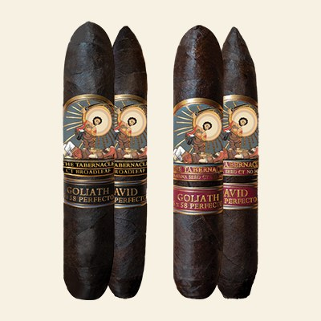 | AJフェルナンデス | コネチカット・ブロードリーフ | タバーナクルのペルフェクト2サイズ |
オルメク（2022） | AJフェルナンデス | メキシコ・サンアンドレス（クラロ／マデューロ） | 最古の文明へのオマージュ。「知られる限り最初に葉巻を吸った人々」という位置づけと、その故地をサンアンドレス葉の産地と重ねる語りは、同社のブランドの物語。フィラーは樽詰めで3年熟成 Cigar Snob の Cigar of the Year 2022 第1位。CA Top 25 of 2025 第22位・94点（マデューロ・グランデ） |
| ハイクレア・キャッスル セネトジェル（2022） 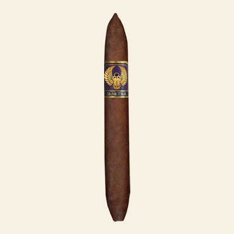 | AJフェルナンデス | ― | ツタンカーメン墓発見100周年の限定ペルフェクト 1本 $33（約¥5,300）。毎年11月の年次限定として継続（2026年版の箱数はFoundation発表で700箱、Cigar Aficionadoの報道で750箱と食い違い、本稿では断定しない） |
| タバーナクル・ナイト・コマンダー（2023） 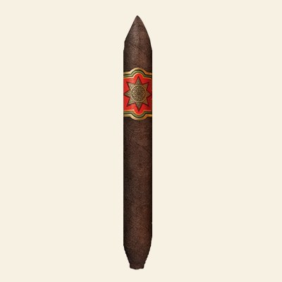 | AJフェルナンデス | コネチカット・ブロードリーフ | 叙勲を記念する年次限定（九章） 純益の100%を Royal Ethiopian Trust へ寄付 |
アクスム（2023「メタパ」→2024改名） | AJフェルナンデス | エクアドル・スマトラ | 契約の箱の安置地と伝わる王国の名 CA Top 25 of 2024 第12位・93点（クラロ・ロブスト） |
ザ・ワイズマン コロホ／マデューロ（新ブレンド）（2024） | マイファーザー・シガーズ | ニカラグア・コロホ／メキシコ・サンアンドレス | 看板の世代交代（十章） 名前を残し、葉と工場を総入れ替えした新ブレンド |
ファウンデーション 10th アニバーサリオ（2025） | AJフェルナンデス | CTブロードリーフ×キューバ種のハイブリッド | 創業10周年。7×58サロモン、1本 $35（約¥5,600） Halfwheel 89点。火災の影響で出荷は生産分の半分程度に |
評価の物差しでも、彼はサカと正反対の場所にいます。Cigar Aficionado の年間 Top 25 に、ファウンデーションは5度名を連ねました。デビュー作で第25位、看板のマデューロで第3位、城の葉巻で第21位、アクスムで第12位、オルメクで第22位。第10弾で検証した通り、サカのダンバートンは同誌の採点対象外です。同じ工場を出た二人の卒業生のうち、一人は評価誌と距離を置き、一人は評価誌の常連になった。この対比は、ドリュー・エステートという「学校」の卒業生たちの多様さそのものです。
| 年 | ライン（ビトラ） | 順位・得点 |
|---|---|---|
| 2016 | エル・グエグエンセ コロナ・ゴルダ | 第25位・92点 |
| 2018 | ザ・ワイズマン・マデューロ ロブスト | 第3位・95点 |
| 2020 | ハイクレア・キャッスル ヴィクトリアン トロ | 第21位・93点 |
| 2024 | アクスム クラロ・ロブスト | 第12位・93点 |
| 2025 | オルメク マデューロ・グランデ | 第22位・94点 |
「アメリカで人気」の証拠は、数字の外にもあります。世界最大級の視聴者を持つポッドキャスト「ジョー・ローガン・エクスペリエンス」のセットに、2020年9月11日の回から、ファウンデーションの灰皿が映り込み続けているのです。経緯は本人の語るところでは、こうです。2012年頃からの熱心な番組の聴き手だったメリーロは、ロサンゼルスの友人の申し出で、ニカラグアのアートディレクター、アレックス・ガルシアと手描きの特製箱を作ってローガンに託しました。箱は届き、番組内で紹介され、ローガン本人から Instagram の DM で礼が届きます。メリーロはエリー・ブルーの特注ヒュミドール（ローガンのロゴを手作業で象嵌したもの）を作って贈り、さらに彼の好みを観察して、専用のブレンドまで調合しました。番組の中でローガンは言いました。「俺の仲間のニックは、本当に葉巻が分かっている」。広告ではなく、贈り物と灰皿から始まった関係が、人気者の素顔を映しています。
ファウンデーションは「レアで人気」と語られることがあります。当編集部の調査で裏付けられるのは、そのうち「生産設計」の側です。メネリク はイベント会場でも買えない配り方で2年焦らし、後に四半期1,000箱の限定生産になりました。セネトジェル は年次限定（2026年版の箱数はFoundation発表の700箱とCigar Aficionadoの750箱が食い違う）、チャーター・オーク の祖父の名を冠した限定ブレンドは四半期限定生産、初代ワイズマンの旧ブレンドは2024年に廃番となり「もう作られないブレンド」になりました。一方で、キューバ葉巻のような二次市場の価格高騰を示すデータは、今回の調査では確認できていません。「手に入りにくさは設計のうち」と書くのが正確で、「幻の葉巻」式の煽りは避けるべきだと考えます。なお、本人の語りには数字の揺れもあります。在籍年数は「11年／12年／13年」、ウィンザーの農場は「40エーカー／50エーカー」、ナイト・コマンダーの箱数は発表により「700箱／750箱」、初回は本人が「約800箱」と語ります。本文では、揺れのある数字は幅を持たせるか省き、単一の数字で断定しない書き方をしました。
◆ 九、エチオピアの騎士 ― メネリクの箱が運んだ縁
物語の山場は、エチオピアです。起点は一箱の葉巻でした。2020年2月29日、閏日。ワシントンDCの葉巻店 T.G.シガーズ のエチオピア人店主が、店頭で メネリク の箱を見て言いました。「ニコラスに会わせなければ」。その夜の夕食会への招待が、全ての始まりだったとメリーロは語ります。「賢者の子」という名の葉巻が、作り手をエチオピアの王室機関へつないだのです。
その後、約2年にわたって皇冠評議会の人々と親交を深めます。本人は後に、「今思えば、あの期間は審査（ヴェッティング）だったのだろう」と振り返っています。そして2022年、エチオピア皇冠評議会は彼に、エチオピア星勲章のナイト・コマンダーの位を授けました。勲章の起源は、フランスのレジオン・ドヌール博物館の解説によれば、後の皇帝メネリク2世が即位前の1874年に創設した星勲章にさかのぼります。叙勲はエルミアス・サーレ・セラシエ皇子による剣での儀式で行われたといいます。本人は「人生最大の栄誉」と語り、叙勲の理由は「エチオピアの文化と歴史への支援」でした。同年10月には、エルミアス皇子と共にエチオピアを公式訪問する代表団に、唯一の非エチオピア人として加わっています。彼は PCA の会場で言いました。「私はエチオピアの養子だ」。
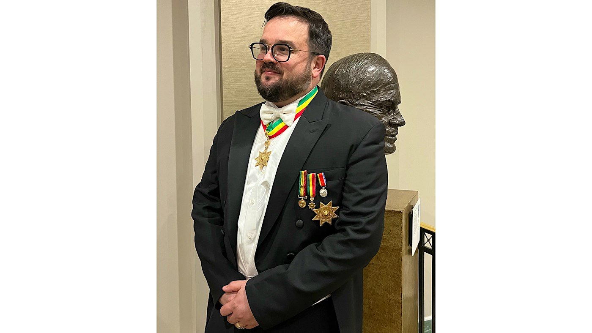
勲章は、葉巻にもなりました。タバーナクル・ナイト・コマンダー（2023年発表、毎秋の年次限定）は、6¾×52のペルフェクト。コネチカット・ブロードリーフのラッパーに、巻いた後シダーで15か月の追加熟成をかけた一本で、価格は1本 $40（約¥6,400）。Foundation 側の純益（発表文の表現では net proceeds）の100%が、皇冠評議会系の非営利団体 Royal Ethiopian Trust に寄付され、奨学金や教会・文化遺産の修復、地域開発に充てられます。メリーロは同団体の理事その人です。この一本は、Cigar Coop の2025年 Cigar of the Year カウントダウンで第2位に入りました。
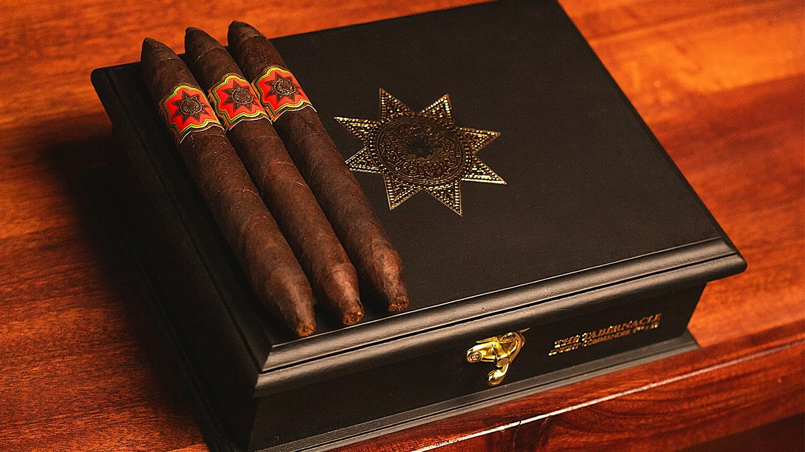
そして2025年12月、この関係は「葉巻の寄付」の先へ進みました。1868年のマグダラ遠征で英軍に持ち去られた、皇后ティルウォーク（皇帝テオドロス2世の妻）の金のヘアピンです。この品は2025年、ローマの競売会社ベルトラミの競売に現れましたが、エチオピア遺産庁が競売カタログを監視していて同定し、競売停止を求めたため、競売会社はただちに品を取り下げました。そのうえで Royal Ethiopian Trust が競売会社との交渉に入り、寄付者たちの資金によって確保します。2025年12月3日、Trust は取得と返還計画を公式に発表しました。交渉はエルミアス皇子が主導し、理事のメリーロが緊密に協力した、と発表文は記します。メリーロ自身が発表で語ったのは、むしろ教育のことでした。「教育こそ、この仕事の核心です。私たちが共有する人間の物語への理解を深めるとき、文化と文化のあいだの真の対話と、意味のあるつながりの土台が生まれます」。
発表から3か月後、約束は形になりました。2026年3月7日、ワシントンのカトリック大学で開かれた式典でヘアピンは公開され、返還の行程が始まります。この日、エルミアス皇子と人類学者アルラ・パンクハースト博士のパネル討論で司会を務めたのが、メリーロでした。そして3月27日、アディスアベバでエチオピア遺産庁の長官アベバウ・アヤレウが、この金の髪飾り（現地では「ウォレバ」と呼ばれます）を受領したのです。1868年にマグダラから持ち去られてから、150年以上を経ての帰還でした。ヘアピンは今、エチオピアの保管下にあります。国立博物館では返還された遺産のための専用展示が準備されており、ヘアピンはその目玉となる予定ですが、本稿執筆時点（2026年11月）で展示の開始を確認できる公式発表はありません。「戻った」ことと「展示された」ことは、別の出来事として記録しておきたいと思います。デビュー作の「賢者」から、「賢者の子」メネリク、箱絵のハイレ・セラシエ、アクスムへと続いた命名の系譜は、作り手の実人生の中で、勲章と文化財返還という形で回収されました。葉巻業界で、他に例のない話です。
◆ 十、試練の10年目 ― 工場火災と、看板の世代交代
順風だけの10年ではありませんでした。2024年3月、ファウンデーションは AGANORSA（TABSA）との関係を終えます。デビュー作 エル・グエグエンセ と初代 ザ・ワイズマン・マデューロ のブレンドは廃番になりました。工場変更の理由について、本人の語る主軸は別のところにあります。「名前の発音の難しさと、成長の鈍さ。次の10年に向けて、仕切り直したかった」。そして、2003年にニカラグアで出会って以来の知己である ペピン・ガルシア と組む機会が来た。2024年4月、名前だけを残して葉と工場を総入れ替えした新ブレンドのワイズマンが、マイファーザー・シガーズ 製で出荷されました。看板の世代交代を、創業9年目に自ら断行したのです。
翌2025年3月末には、Tabacalera AJ Fernandez の工場で火災が起きました（本人の公式発信では一貫して「4月」と語られます）。包装部門から出火し、包装資材と完成品・熟成中の在庫が焼けましたが、死傷者はありませんでした。メリーロは署名入りの声明で遅延を予告し、被害が大きかったのは タバーナクル と オルメク だったと明かしています。創業10周年の記念作 10th アニバーサリオ は、工場に残っていた完成品の多くが焼損・損傷し、計画生産量の約半分しか出荷できておらず、出荷は2026年9月まで続く見込みとされました。PCA 2026 でファウンデーションは新製品を出さず、立て直しの最中にあります。ただしこれは見本市の時点の話で、2026年11月には年次限定の セネトジェル 2026年版が出荷されています。それでも2025年秋には年次限定のナイト・コマンダーが出荷され、年末には オルメク・マデューロ が CA Top 25 の第22位に入りました。試練の年にも、彼の葉巻は棚とリストに残り続けたのです。
◆ 日本編 ― まだ海を渡っていない人気者
日本でのファウンデーションの景色は、端的に言えば「何もない」です。当編集部の日本葉巻データベース（2026年11月17日時点）で、ファウンデーション関連は0件。財務省の認可も、国内での販売確認も存在しません。日本の代理店・輸入元の形跡も、今回の調査では見つかりませんでした。アメリカでは Cigar Aficionado の年間第3位を獲り、イベント限定で客を焦らすほどの人気者が、日本の認可リストには一行も載っていないのです。
第10弾のサカとの対比が、この空白を際立たせます。サカのダンバートンは、代理店の ヒロミエンタープライズ さんを通じて21品目が日本の棚に届き、米国では買えない国際専用ラインまで並びました。同じ年に、同じ工場を出たもう一人の卒業生は、まだ海を渡っていません。現状、日本の読者が彼の葉巻に触れる道は、Smokingpipes などファウンデーションを常備する米国の小売からの個人輸入に限られます。
そして、皮肉な縁が一つあります。この人気者のキャリアの起点は、日本で受け取った一通のメールでした（三章）。日本は、彼の物語の「始まりの場所」でありながら、彼の葉巻がまだ届いていない場所でもあります。その空白が埋まる日が来るのか。彼の二つの故郷の物語に、日本が三つ目の土地として加わる日を、当編集部も待ちたいと思います。
◆ 結び ― 二つの故郷を持つ男
小売店のヒュミドールの番人だった18歳は、エステリに住み込んで巻き場に立ち、持分を資金に独立し、本社を故郷の畑の真ん中に置きました。2026年の年頭、彼はこう振り返っています。「2025年は、コネチカット・リバー・バレーからエステリへ、そしてドイツとイタリアへ、私を運んだ」。二つの故郷と、勲章をくれた第三の土地。ラッパーを極めようとする男の旅は、まだ続いています。
最後に、次回への橋を一つ。本特集と前回のサカ編で、二人の卒業生の物語が揃いました。残るのは、二人を送り出した古巣そのものの物語です。インフュージョンの革命児が、リガ・プリバーダを生み、二人の卒業生を輩出し、買収と再編を経て、今どこに立っているのか。次回は、ドリュー・エステート そのものを追います。
本稿の主要な主張は、以下の一次・二次資料で裏取りしています。主張ごとの対応は編集部の出典台帳に記録しています。
・本人の工程・職責について：A Conversation With Nicholas Melillo（Cigar Aficionado、2023年）
・Liga Privada No.9 の命名とサカの発売前発言：Liga Privada No.9 レビュー（Halfwheel）
・ブロードリーフの歩留まり（サカ発言）：Talking Broadleaf With Steve Saka（Cigar Aficionado、2012年）
・コネチカット・バレーのタバコ史：Connecticut Valley Tobacco Historical Society／Soldiers of the Soil（Windsor Historical Society）
・エチオピア星勲章の創設年：レジオン・ドヌール博物館 収蔵品解説
・ヘアピン取得と返還計画：Royal Ethiopian Trust 公式発表（2025年12月3日）
・ヘアピンの受領（2026年3月27日）：Ethiopian News Agency／ワシントン公開式典：The Reporter（エチオピア）
・AJ Fernandez 工場火災：Cigar Aficionado（2025年3月31日）
・Wise Man の My Father 製への移行：Cigar Aficionado（2024年3月11日）
・セネトジェル 2026年版の出荷：Cigar Aficionado（2026年）／Foundation発表（700箱）：Premium Cigar Association（2026年11月16日）
・均質化タバコ葉の規制史：ATF Procedure 73-5（TTB）
・作付面積の公式統計：USDA 2022年農業センサス コネチカット州 Table 35
・2025年のシェード作付の現況：CT Mirror「Made in the shade: CT tobacco farmers roll with the times」（Dave Altimari、2025年8月10日）